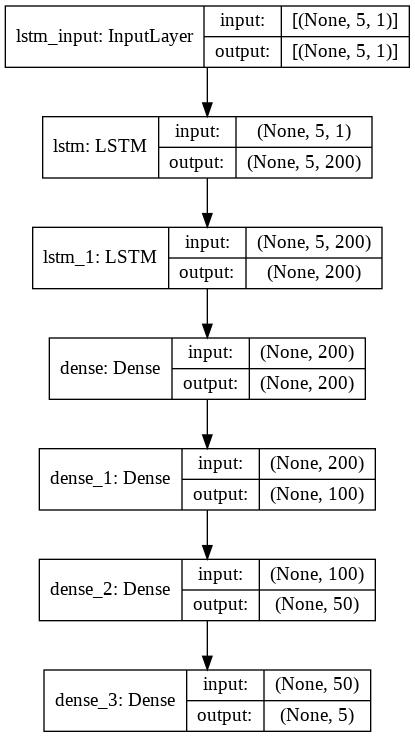

import math
import numpy as np
import pandas as pd
import matplotlib.pyplot as plt
import tensorflow as tf
from sklearn.metrics import mean_squared_error, mean_absolute_error
import warnings
warnings.filterwarnings('ignore')For data analysis and machine learning, this code imports several libraries and modules.
Math, numpy, pandas, and matplotlib.pyplot are imported in the first four lines. These libraries provide functions and tools for mathematical calculations, numerical operations, data manipulation, and data visualization, respectively. Tensorflow and Sklearn.metrics are imported next. Machine learning models can be built and trained using TensorFlow, while sklearn.metrics offers functions for evaluating the performance of machine learning models, including the calculation of mean squared errors and mean absolute errors.
The last line imports the warnings module and sets a filter to ignore warning messages. This is done to suppress any warning messages that may be generated during the execution of the code. Overall, this code sets up the necessary dependencies for performing data analysis and machine learning tasks.
AAPL = pd.read_csv("/content/drive/MyDrive/Database/Pre_Processed_AAPL.csv")
TSLA = pd.read_csv("/content/drive/MyDrive/Database/Pre_Processed_TSLA.csv")
GOOG = pd.read_csv("/content/drive/MyDrive/Database/Pre_Processed_GOOG.csv")
MSFT = pd.read_csv("/content/drive/MyDrive/Database/Pre_Processed_MSFT.csv")
AMZN = pd.read_csv("/content/drive/MyDrive/Database/Pre_Processed_AMZN.csv")AAPL, TSLA, GOOG, MSFT, and AMZN are read and loaded into separate variables. Every CSV file contains pre-processed data related to different stocks (Apple, Tesla, Google, Microsoft, and Amazon, respectively). The CSV files are read using the PD.read_csv() function. File paths indicate the location of the CSV files on the Google Drive ("/content/drive/MyDrive/Database/Pre_Processed_*.csv"). By using this function, the code reads the contents of each CSV file and stores it in the respective variable. As a result, the variables AAPL, TSLA, GOOG, MSFT, and AMZN will contain the data from their corresponding CSV files. As a result, each company's stock data can be further manipulated, analyzed, or modeled separately.
def Dataset(Data, Date):
Train_Data = Data['Adj. Close'][Data['Date'] < Date].to_numpy()
Data_Train = []
Data_Train_X = []
Data_Train_Y = []
for i in range(0, len(Train_Data), 5):
try:
Data_Train.append(Train_Data[i : i + 5])
except:
pass
if len(Data_Train[-1]) < 5:
Data_Train.pop(-1)
Data_Train_X = Data_Train[0 : -1]
Data_Train_X = np.array(Data_Train_X)
Data_Train_X = Data_Train_X.reshape((-1, 5, 1))
Data_Train_Y = Data_Train[1 : len(Data_Train)]
Data_Train_Y = np.array(Data_Train_Y)
Data_Train_Y = Data_Train_Y.reshape((-1, 5, 1))
Test_Data = Data['Adj. Close'][Data['Date'] >= Date].to_numpy()
Data_Test = []
Data_Test_X = []
Data_Test_Y = []
for i in range(0, len(Test_Data), 5):
try:
Data_Test.append(Test_Data[i : i + 5])
except:
pass
if len(Data_Test[-1]) < 5:
Data_Test.pop(-1)
Data_Test_X = Data_Test[0 : -1]
Data_Test_X = np.array(Data_Test_X)
Data_Test_X = Data_Test_X.reshape((-1, 5, 1))
Data_Test_Y = Data_Test[1 : len(Data_Test)]
Data_Test_Y = np.array(Data_Test_Y)
Data_Test_Y = Data_Test_Y.reshape((-1, 5, 1))
return Data_Train_X, Data_Train_Y, Data_Test_X, Data_Test_YThe code defines a function named Dataset that takes two
parameters: Data and Date. The purpose of this
function is to preprocess a given dataset and split it into training and
testing sets based on a specified date. First, it extracts the 'Adj.
Delete the 'Close' column from the Data DataFrame for the
dates before the specified Date. It converts the extracted
data into a NumPy array and assigns it to the Train_Data
variable. Data_Train, Data_Train_X, and Data_Train_Y variables are then
initialized. After that, it iterates over the Train_Data
array in increments of 5, creating subsets of 5 consecutive values.
These subsets are appended to the Data_Train list.
If the length of the last subset in Data_Train is less
than 5 (due to incomplete data), it is removed from the list using the
pop() function.
The next set of operations is similar to the previous steps, but it
applies to the testing data. 'Adj.' An array is created using the Close
column from the SDataDataFrame, and the result is assigned to the
TestData variable. Subsets of five consecutive values are then created
and appended to the Data_Test list. The last subset is
removed if its length is less than 5. Finally, the collected training
and testing data are reshaped into a three-dimensional NumPy array of
shape (batch_size, sequence_length, input_dimension). The training data
arrays are assigned to Data_Train_X and
Data_Train_Y, while the testing data arrays are assigned to
Data_Test_X and Data_Test_Y. These arrays are
returned by the function: Data_Train_X,
Data_Train_Y, Data_Test_X, and
Data_Test_Y. The arrays can be used for further analysis or
modeling, such as time series analysis or sequence prediction.
The model number is ###
def Model():
model = tf.keras.models.Sequential([
tf.keras.layers.LSTM(200, input_shape = (5, 1), activation = tf.nn.leaky_relu, return_sequences = True),
tf.keras.layers.LSTM(200, activation = tf.nn.leaky_relu),
tf.keras.layers.Dense(200, activation = tf.nn.leaky_relu),
tf.keras.layers.Dense(100, activation = tf.nn.leaky_relu),
tf.keras.layers.Dense(50, activation = tf.nn.leaky_relu),
tf.keras.layers.Dense(5, activation = tf.nn.leaky_relu)
])
return modelCode in this file defines a function named Model that
constructs and returns a specific type of machine learning model. The
model is built using the TensorFlow library and follows a sequential
architecture. There are several layers in the model. With 200 units, the
first layer is an LSTM (Long Short-Term Memory). The input shape of this
layer is (5, 1), indicating that it expects input sequences with a
length of 5 and a feature dimension of 1. The activation function used
in this layer is a leaky ReLU (Rectified Linear Unit), which introduces
a small gradient for negative input values. A 200-unit LSTM layer
follows. The leaky ReLU activation function is also used. Unlike the
previous layer, this layer does not have the
return_sequences argument set to True. This means that it
only returns the final output of the LSTM layer rather than the full
sequence of outputs. The LSTM layer is followed by several dense layers.
Each neuron in these layers is connected to every neuron in the previous
layer. Different dense layers have different numbers of units: 200, 100,
50, and 5. Each dense layer uses the leaky ReLU activation function.
Layers are stacked sequentially, with the output of one layer serving as
the input for the next. The model is then returned by the function. By
using this function, the specific model configuration can be created and
obtained. Based on the data and the specific problem, the returned model
can be used for regression, classification, or sequence prediction.
model = Model()It creates an instance of the machine learning model defined by the
Model function. The Model function constructs
and configures the model architecture using TensorFlow, and this line
assigns the constructed model to the variable model.
By calling the Model() function, the code instantiates
the model object, which can be further utilized for training,
evaluation, and prediction tasks. The model contains the layers and
parameters defined in the Model function, such as LSTM
layers, dense layers, and activation functions.
Once this line of code is executed, the model variable
holds the constructed model, and it can be employed to train on data,
make predictions, evaluate performance, and perform other operations
associated with the machine learning model.
tf.keras.utils.plot_model(model, show_shapes=True)
Using the TensorFlow Keras library's plot_model function, this code
generates a visual representation of the machine learning model. The
function takes the model object as input and generates a
graphical diagram that illustrates the structure of the model. This
provides a visual overview of the model layers and their relationships.
Layers are represented as blocks, and data flow is indicated by arrows
between the blocks. The plot includes details such as the layer types,
shapes of inputs and outputs, and the connections between layers.
Show_shapes=True displays the input and output tensor shapes. This
information can be helpful in understanding the dimensions and flow of
data through the model. Using this model plot, it is easier to visualize
and comprehend the structure of the machine learning model. As a result
of this visual representation, it is easier to understand the model's
design, identify any potential issues or improvements, and communicate
the model architecture to those involved in the development or review of
the model.
model.summary()Model: "sequential"
_________________________________________________________________
Layer (type) Output Shape Param #
=================================================================
lstm (LSTM) (None, 5, 200) 161600
_________________________________________________________________
lstm_1 (LSTM) (None, 200) 320800
_________________________________________________________________
dense (Dense) (None, 200) 40200
_________________________________________________________________
dense_1 (Dense) (None, 100) 20100
_________________________________________________________________
dense_2 (Dense) (None, 50) 5050
_________________________________________________________________
dense_3 (Dense) (None, 5) 255
=================================================================
Total params: 548,005
Trainable params: 548,005
Non-trainable params: 0
_________________________________________________________________
In this line of code, the architecture and parameters of the machine
learning model are summarized. The summary() method is a
function provided by TensorFlow's Keras library that generates a concise
overview of the model.
When executed, this code displays information about each layer in the model, such as the layer type, output shape, number of parameters, and number of trainable parameters. The summary also includes the total number of parameters in the model. This provides a high-level understanding of the model's structure. It helps in assessing the number of layers, the size of the input and output tensors, and the total number of parameters that need to be learned during training. Using this information, model evaluation and debugging can be accomplished. It allows you to quickly check if the model is configured as intended, verify that the input and output shapes match the data requirements, and get insights into the complexity of the model in terms of trainable parameters.
The machine learning model summary provides a comprehensive overview of its structure and characteristics. Further analysis, optimization, and interpretation of the model's performance can be guided by this information.
def scheduler(epoch):
if epoch <= 150:
lrate = (10 ** -5) * (epoch / 150)
elif epoch <= 400:
initial_lrate = (10 ** -5)
k = 0.01
lrate = initial_lrate * math.exp(-k * (epoch - 150))
else:
lrate = (10 ** -6)
return lrateThe code defines a function named "scheduler" that takes an epoch
parameter as its input. The purpose of this function is to adjust and
return the learning rate (lrate) based on the value of the epoch. This
is done by checking the value of the epoch parameter. A fraction of a
hundred is used to calculate the learning rate below or equal to 150,
with the fraction increasing as the epoch progresses. This means that
the learning rate starts small and gradually increases over the initial
epochs. A different formula is used if the epoch is greater than 150 but
less than or equal to 400. The initial learning rate is set to 10^-5,
and the rate exponentially decreases with the epoch value. The decay
rate is controlled by the constant k and is used to
gradually reduce the learning rate over time. When the epoch is greater
than 400, the learning rate is fixed at 10^-6. This means that after 400
epochs, the learning rate remains constant at a very low value. The
calculated learning rate is returned as the output of the function. With
this function, the learning rate is dynamically adjusted during
training. In this function, a varying learning rate schedule is defined
based on the progress of the training epochs. By adapting the learning
rate to the characteristics of the optimization problem, dynamic
learning rate schedules can improve the performance and convergence of
machine learning models.
epochs = [i for i in range(1, 1001, 1)]
lrate = [scheduler(i) for i in range(1, 1001, 1)]
plt.plot(epochs, lrate)[<matplotlib.lines.Line2D at 0x7f9688b03150>]A plot of learning rate values over a range of epochs is generated by this code.
With a step size of 1, the first line of code creates a list of
epochs containing values from 1 to 1000 (inclusive). This list
represents the range of epochs for which the learning rate will be
calculated. It is created by applying the scheduler function to each
value in the epochs list. A scheduler function calculates
the learning rate based on the value of the epoch. Thus, the
lrate list contains the corresponding learning rate values
for each epoch in the epochs list. To create a line plot,
the third line of code calls the plt.plot() function from
matplotlib.pyplot. The x-axis values are taken from the epochs list and
the y-axis values are taken from the lrate list. This generates a line
graph that illustrates how the learning rate changes over the range of
epochs. The learning rate values are plotted against the corresponding
epochs to provide a visual representation of how the learning rate
changes. Understanding how the learning rate schedule affects the
model's performance and convergence can be helpful. For improved model
training, it allows for analysis and fine-tuning of the learning rate
strategy.
callback = tf.keras.callbacks.LearningRateScheduler(scheduler)An object named "callback" is created in this line of code that utilizes a learning rate scheduler during the training process.
Callback objects are constructed using the
tf.keras.callbacks.LearningRateScheduler() function. The scheduler
function is passed as an argument. The scheduler function
determines the learning rate based on the epoch number. A callback
object is passed to the model's training routine, such as fit(). The
callback is responsible for modifying the learning rate of the model at
specific intervals, as defined by the scheduler function.
An epoch-based learning rate scheduler adjusts the learning rate
dynamically during training. Adapting the learning rate to the changing
requirements of the model as it goes through different stages of
optimization can be beneficial for improving the training process. Using
the learning rate scheduler callback, the model can adjust its learning
rate automatically and without manual intervention. A better model
convergence, faster training, and better performance can be achieved as
a result.
The apple
AAPL.head()| Date | Open | High | Low | Close | Adj. Close | Volume | |
|---|---|---|---|---|---|---|---|
| 0 | 2015-01-02 | 27.85 | 27.86 | 26.84 | 27.33 | 24.86 | 212818400.0 |
| 1 | 2015-01-05 | 27.07 | 27.16 | 26.35 | 26.56 | 24.16 | 257142000.0 |
| 2 | 2015-01-06 | 26.64 | 26.86 | 26.16 | 26.57 | 24.16 | 263188400.0 |
| 3 | 2015-01-07 | 26.80 | 27.05 | 26.67 | 26.94 | 24.50 | 160423600.0 |
| 4 | 2015-01-08 | 27.31 | 28.04 | 27.17 | 27.97 | 25.44 | 237458000.0 |
Displays the first few rows of the AAPL DataFrame. The
.head() function is a method provided by the pandas library
that allows us to inspect the top portion of a DataFrame. This code
prints the first few columns of the AAPL DataFrame. By default, it
displays the first five rows, but this can be customized by passing a
specific number as an argument to the .head() function. It
is used to quickly view the data in the AAPL DataFrame. By inspecting
the top rows, we can examine the column names and the values in the
dataset, which helps in understanding the structure and content of the
data. We can use this information for data exploration, data cleaning,
and gaining an initial understanding of the data. In addition to
allowing us to verify if the data is loaded correctly, it provides a
glimpse into the AAPL DataFrame's format and content.
AAPL.info()<class 'pandas.core.frame.DataFrame'>
RangeIndex: 1549 entries, 0 to 1548
Data columns (total 7 columns):
# Column Non-Null Count Dtype
--- ------ -------------- -----
0 Date 1549 non-null object
1 Open 1549 non-null float64
2 High 1549 non-null float64
3 Low 1549 non-null float64
4 Close 1549 non-null float64
5 Adj. Close 1549 non-null float64
6 Volume 1549 non-null float64
dtypes: float64(6), object(1)
memory usage: 84.8+ KB
AAPL DataFrame summary information is provided by this code. This method in the pandas library displays a concise summary of the structure and contents of a DataFrame. The code displays information about the AAPL DataFrame when executed, including the column names, the number of non-null values in each column, and the column types. Additionally, it provides an overall summary that includes the total number of entries (rows) in the DataFrame. This function provides an overview of the dataset's structure and characteristics. It helps in understanding the data types of each column, identifying missing or null values, and estimating the memory usage of the DataFrame. Data exploration, data cleaning, and initial data analysis make use of this information. It allows us to assess the quality and completeness of the data, determine if any data type conversions or missing value handling is necessary, and make informed decisions regarding further data processing or analysis.
By using .info(), we gain insights into the basic
properties of the AAPL DataFrame, enabling us to proceed with subsequent
data manipulations and analysis with a clearer understanding of the
data's composition.
# Change Dtype of Date column
AAPL["Date"] = pd.to_datetime(AAPL["Date"])This code converts the data type of the "Date" column in the AAPL
DataFrame to the datetime format using the pd.to_datetime()
function provided by the pandas library.
The "Date" column in the AAPL DataFrame is converted into a datetime format by executing this code. The datetime format is a standardized representation of dates and times that allows for easier manipulation and analysis of temporal data. This function converts the "Date" column to the datetime format. It ensures that the "Date" column is interpreted as a date, not just a number or text. By changing the data type of the "Date" column to datetime, you can filter or sort the DataFrame according to dates, extract specific components from the dates (year, month, day), calculate time differences, and perform time-based analyses. As a result of this code, the "Date" column in the AAPL DataFrame is recognized as datetime data, enabling The dataset can handle and utilize temporal information seamlessly.
Split the Data into Training and Test set. The Training Period: 2015-01-02 - 2020-09-30 and the Testing Period: 2020-10-01 - 2021-02-26.
AAPL_Date = '2020-10-01'
AAPL_Train_X, AAPL_Train_Y, AAPL_Test_X, AAPL_Test_Y = Dataset(AAPL, AAPL_Date)This code assigns values to variables and calls the
Dataset function to split the AAPL dataset into training
and testing sets based on a specified date. In the first line, the
variable 'AAPL_Date' is assigned the value '2020-10-01'. The second line
of code calls the Dataset() function with the AAPL dataset and the
AAPL_Date as arguments. The Dataset function
is responsible for performing the actual splitting of the data. The
Dataset function takes the AAPL dataset and the
AAPL_Date as inputs and returns four sets of data:
AAPL_Train_X, AAPL_Train_Y,
AAPL_Test_X, and AAPL_Test_Y.
AAPL_Train_X and AAPL_Train_Y represent the
training data, where AAPL_Train_X contains the input
features and AAPL_Train_Y contains the corresponding output
labels or target values. AAPL_Test_X and
AAPL_Test_Y represent the testing data, where
AAPL_Test_X contains the input features for testing and
AAPL_Test_Y contains the corresponding expected output
labels or target values for evaluation. By calling the
Dataset function and assigning the returned values to
specific variables, this code organizes the AAPL dataset into separate
training and testing sets, which can be further used for training a
machine learning model, evaluating its performance, or conducting any
other analysis related to the dataset.
AAPL_Model = Model()For the AAPL dataset, this code creates a machine learning model instance.
This line of code initializes the variable AAPL_Model and assigns its
value to the Model() function. The Model() function is
responsible for constructing and configuring the specific machine
learning model architecture.
By calling the Model() function, the code instantiates
the AAPL_Model object, which represents the machine
learning model tailored for the AAPL dataset.
The AAPL_Model object encapsulates the architecture,
parameters, and functionality defined within the Model()
function. It can be utilized to perform various tasks, such as training
the model on the AAPL training data, making predictions, evaluating the
model's performance, or conducting any other operations associated with
the machine learning model.
Overall, this code sets up the AAPL_Model object as an
instance of the machine learning model specific to the AAPL dataset,
enabling further utilization of the model for analysis, prediction, and
other tasks related to the AAPL stock data.
AAPL_Model.compile(optimizer = tf.keras.optimizers.Adam(), loss = 'mse', metrics = tf.keras.metrics.RootMeanSquaredError())This code configures the compilation settings for the
AAPL_Model machine learning model. This code is provided by
the TensorFlow Keras library's compile() function. It takes several
arguments to define the optimizer, loss function, and metrics to be used
during the training process. The optimizer argument is set to Adam in
this example. The optimizer determines how the model's weights are
updated during training, and Adam is a popular optimization algorithm
widely used in deep learning. A mse loss argument is used. It is clear
from this that the mean square error is the loss function used to
calculate the difference between the predicted and real outputs.
The metrics argument is set to
tf.keras.metrics.RootMeanSquaredError(), which initializes
the root mean squared error (RMSE) as the evaluation metric. The RMSE
metric provides a measure of how well the model performs in terms of the
average difference between the predicted and true outputs.
By configuring these settings through the compile()
function, the code prepares the AAPL_Model for the training
process, specifying the optimization algorithm, loss function, and
evaluation metric to be used. In order to train the model effectively
and assess its performance accurately, these settings are crucial.
AAPL_hist = AAPL_Model.fit(AAPL_Train_X, AAPL_Train_Y, epochs = 1000, validation_data = (AAPL_Test_X, AAPL_Test_Y), callbacks=[callback])This code trains the AAPL_Model machine learning model
using the training data (AAPL_Train_X and
AAPL_Train_Y) and evaluates its performance on the testing
data (AAPL_Test_X and AAPL_Test_Y).
The fit() method is a function provided by the
TensorFlow Keras library that performs the training process for a
machine learning model. It takes several arguments to specify the
training data, the number of training epochs, the validation data for
evaluation, and any additional callbacks to be utilized during
training.
In this specific code, AAPL_Train_X and
AAPL_Train_Y are passed as the training data, representing
the input features and the corresponding output labels,
respectively.
The epochs argument is set to 1000, indicating the
number of times the training data will be iterated over during the
training process. Each epoch represents a complete pass through the
entire training dataset. In this case, validation data is set to
(AAPL_Test_X, AAPL_Test_Y), providing the testing data as a validation
set. This allows for monitoring the model's performance on unseen data
and helps in assessing its generalization ability. The callbacks
argument refers to a callback object (such as a learning rate
scheduler). Callbacks provide additional functionalities during
training, such as modifying the learning rate or saving the model's
checkpoints. AAPL_Model is trained using the specified training data and
settings by running the code above. The model's performance is evaluated
on the testing data after each epoch, and the training history is stored
in the AAPL_hist object, which can be used to analyze the
model's training progress and performance metrics.
Overall, this code initiates and manages the training process for the
AAPL_Model, allowing it to learn from the training data and
improve its performance over the specified number of epochs.
history_dict = AAPL_hist.history
loss = history_dict["loss"]
root_mean_squared_error = history_dict["root_mean_squared_error"]
val_loss = history_dict["val_loss"]
val_root_mean_squared_error = history_dict["val_root_mean_squared_error"]
epochs = range(1, len(loss) + 1)A training history is obtained after the training process has been
completed by this code. It captures the values of different metrics
recorded during training and organizes them into separate variables for
further analysis and visualization. In the first line of code, the
history of the AAPL model is stored in the history_dict variable. The
history attribute of the AAPL_hist object
contains various recorded metrics such as loss, root mean squared error
(RMSE), validation loss, and validation RMSE. The subsequent lines of
code extract the individual metric values from the
history_dict and assign them to separate variables for ease
of use. - The loss variable stores the values of the loss
metric recorded during the training epochs. - The
root_mean_squared_error variable stores the values of the
RMSE metric recorded during the training epochs. - The
val_loss variable stores the values of the validation loss
metric recorded during the training epochs. - The
val_root_mean_squared_error variable stores the values of
the validation RMSE metric recorded during the training epochs. Finally,
the epochs variable is assigned to a range of values from 1
to the length of the loss variable plus one. When
visualizing the training history, this range represents the number of
epochs. As a result of capturing and organizing the model's training
history metrics into separate variables, this code enables further
analysis, plotting, or interpretation of the model's performance during
training. In addition to providing insights into the model's convergence
and improvement over time, these metrics also provide information about
its generalization ability.
fig, (ax1, ax2) = plt.subplots(1, 2)
fig.set_figheight(5)
fig.set_figwidth(15)
ax1.plot(epochs, loss, label = 'Training Loss')
ax1.plot(epochs, val_loss, label = 'Validation Loss')
ax1.set(xlabel = "Epochs", ylabel = "Loss")
ax1.legend()
ax2.plot(epochs, root_mean_squared_error, label = "Training Root Mean Squared Error")
ax2.plot(epochs, val_root_mean_squared_error, label = "Validation Root Mean Squared Error")
ax2.set(xlabel = "Epochs", ylabel = "Loss")
ax2.legend()
plt.show()This code generates a visualization that displays the training
history of the AAPL_Model in the form of two line plots
side by side. The first line of code creates a figure (fig)
with two subplots (ax1 and ax2) arranged
horizontally (side by side) using the plt.subplots()
function from the matplotlib.pyplot library. The following two lines of
code adjust the size of the figure, setting its height to 5 units and
width to 15 units using the set_figheight() and
set_figwidth() Afterwards, the code plots the training
history metrics on the subplots. Ax1 plots the training loss (loss) and
validation loss (val_loss) as functions of epochs (epochs). In this
plot, the x-axis is labeled "Epochs" and the y-axis is labeled "Loss".
It is now possible to distinguish between training loss and validation
loss using a legend.
Similarly, for ax2, the code plots the training root
mean squared error (root_mean_squared_error) and the
validation root mean squared error
(val_root_mean_squared_error) as functions of the number of
epochs (epochs). Accordingly, the x-axis is labeled
"Epochs" and the y-axis is labeled "Root Mean Squared Error". A legend
is added to differentiate between the training RMSE and validation
RMSE.
Finally, the plt.show() function is called to display
the generated plot.
By executing this code, two line plots are generated side by side,
presenting the training history of the AAPL_Model in terms
of loss and RMSE metrics. As a result of this visualization, it is
possible to assess and interpret the training behavior and convergence
of the model over the various training epochs.
Predicting Apple's closing stock price
AAPL_prediction = AAPL_Model.predict(AAPL_Test_X)This code makes predictions using the AAPL_Model machine
learning model on the testing data (AAPL_Test_X). A trained
model can be predicted using the TensorFlow Keras library's predict()
function. In this specific code, the AAPL_Test_X data is
passed as an argument to the predict() function. When this
code is run, it generates predictions for the input features in
AAPL_Test_X. This variable is used to assign the predicted
values generated by the model to the corresponding input samples in the
testing data. These predictions represent the model's estimated outputs
or target values for the corresponding input samples in the testing
data. Using these predictions, one can evaluate the model's performance
on testing data, compare it with the true target values, or predict new
data that will not be available until later. This code allows the
evaluation and analysis of the model's performance and generalization
ability to unseen data by making predictions based on its trained model
on testing data. In the context of the AAPL dataset, it facilitates
further analysis or decision-making based on the model's
predictions.
plt.figure(figsize=(20, 5))
plt.plot(AAPL['Date'][AAPL['Date'] < '2020-10-12'], AAPL['Adj. Close'][AAPL['Date'] < '2020-10-12'], label = 'Training')
plt.plot(AAPL['Date'][AAPL['Date'] >= '2020-10-09'], AAPL['Adj. Close'][AAPL['Date'] >= '2020-10-09'], label = 'Testing')
plt.plot(AAPL['Date'][AAPL['Date'] >= '2020-10-12'], AAPL_prediction.reshape(-1), label = 'Predictions')
plt.xlabel('Time')
plt.ylabel('Closing Price')
plt.legend(loc = 'best')<matplotlib.legend.Legend at 0x7f9684fbce90>To visualize the closing prices of AAPL stock, as well as the training data, testing data, and predictions made by the model, this code generates a line plot.
The first line of code sets the figure size of the plot to 20 units
in width and 5 units in height using the
plt.figure(figsize=(20, 5)) function from the
matplotlib.pyplot library.
The next three lines of code create the line plots. The first plot
represents the training data, where the x-axis values are the dates
(AAPL['Date'][AAPL['Date'] < '2020-10-12']) and the
y-axis values are the corresponding adjusted closing prices
(AAPL['Adj. The close date is [AAPL['Date'] < '2020-10-12']).
This plot represents the testing data, where the x-axis values are the
dates (AAPL['Date'][AAPL['Date'] >= '2020-10-09']) and
the y-axis values are the corresponding adjusted closing prices
(AAPL['Adj. (AAPL['Date'] >= '2020-10-09')). The third plot represents the predictions made by the model, where the x-axis values are the dates (AAPL['Date'][AAPL['Date']
>=
'2020-10-12']) and the y-axis values are the predicted closing prices (AAPL_prediction.reshape(-1)). The following lines of code set the x-axis label to "Time" and the y-axis label to "Closing Price" using theplt.xlabel()andplt.ylabel()functions, respectively. Theplt.legend(loc='best')line adds a legend to the plot, which identifies the lines in the The story. Theloc='best'`
argument automatically determines the best position for the legend based
on the available space in the plot.
It generates a line plot showing the closing prices of Apple's stock over time, along with the model predictions and training data. The visualization helps in understanding how the model performs in relation to the actual closing prices and provides a visual representation of its accuracy.
rmse = math.sqrt(mean_squared_error(AAPL_Test_Y.reshape(-1, 5), AAPL_prediction))
mape = np.mean(np.abs(AAPL_prediction - AAPL_Test_Y.reshape(-1, 5))/np.abs(AAPL_Test_Y.reshape(-1, 5)))
print(f'RMSE: {rmse}')
print(f'MAPE: {mape}')RMSE: 4.822911467470171
MAPE: 0.030390689646776783
To assess the model's performance on AAPL testing data, this code computes and prints two evaluation metrics, RMSE (Root Mean Squared Error) and MAPE (Mean Absolute Percentage Error).
The first line of code calculates the RMSE using the
mean_squared_error() function from the sklearn.metrics
module. The mean squared error is calculated by comparing the predicted
values with the true values (AAPL_Test_Y.reshape(-1, 5)). The
math.sqrt() function is then used to take the square root
of the mean squared error, giving us the RMSE value. Numpy's mean and
average functions are then used to calculate the MAPE. It calculates the
absolute percentage error for each prediction by taking the absolute
difference between the predicted values and the true values, dividing it
by the absolute true values, and then averaging these values using
np.mean().
The print() function is used to display the calculated
values of RMSE and MAPE. The f-string notation
(f'RMSE: {rmse}' and f'MAPE: {mape}') is used
to format the output and insert the calculated metric values into the
printed string.
By executing this code, the RMSE and MAPE values are calculated and displayed, providing quantitative measures of the model's accuracy and performance on the AAPL testing data. RMSE is the average difference between predicted and true values, while MAPE is the average percentage error. Regression models are commonly evaluated using these metrics to determine their quality and reliability.
Elon Musk
TSLA.head()| Date | Open | High | Low | Close | Adj. Close | Volume | |
|---|---|---|---|---|---|---|---|
| 0 | 2015-01-02 | 44.57 | 44.65 | 42.65 | 43.86 | 43.86 | 23822000.0 |
| 1 | 2015-01-05 | 42.91 | 43.30 | 41.43 | 42.02 | 42.02 | 26842500.0 |
| 2 | 2015-01-06 | 42.01 | 42.84 | 40.84 | 42.26 | 42.26 | 31309500.0 |
| 3 | 2015-01-07 | 42.67 | 42.96 | 41.96 | 42.19 | 42.19 | 14842000.0 |
| 4 | 2015-01-08 | 42.56 | 42.76 | 42.00 | 42.12 | 42.12 | 17212500.0 |
The first few rows of the TSLA DataFrame are displayed in this code.
The .head() function is a method provided by the pandas
library that allows us to inspect the top portion of a DataFrame. Upon
execution, this code displays the first few rows of the TSLA DataFrame.
By default, it displays the first five rows, but this can be customized
by passing a specific number as an argument to the .head()
function. It is used to quickly get an overview of TSLA DataFrame data.
By inspecting the top rows, we can examine the column names and the
values in the dataset, which helps in understanding the structure and
content of the data. We can use this information to explore and clean
the data. It provides a glimpse into the TSLA DataFrame's format and
content and allows us to verify if the data has been loaded
correctly.
TSLA.info()<class 'pandas.core.frame.DataFrame'>
RangeIndex: 1549 entries, 0 to 1548
Data columns (total 7 columns):
# Column Non-Null Count Dtype
--- ------ -------------- -----
0 Date 1549 non-null object
1 Open 1549 non-null float64
2 High 1549 non-null float64
3 Low 1549 non-null float64
4 Close 1549 non-null float64
5 Adj. Close 1549 non-null float64
6 Volume 1549 non-null float64
dtypes: float64(6), object(1)
memory usage: 84.8+ KB
TSLA DataFrame summary information is provided by this code. The
.info() function is provided by the pandas library that
displays a concise summary of the DataFrame's structure and contents.
This code gives information about TSLA DataFrames, including column
names, the number of non-null values in each column, and its data type,
when executed. Furthermore, it provides an overall summary that includes
the total number of entries (rows) in the DataFrame. This function
provides an overview of the dataset's structure and characteristics. It
helps in understanding the data types of each column, identifying
missing or null values, and estimating the memory usage of the
DataFrame. Using this information is useful for data exploration, data
cleaning, and initial data analysis. The data will be evaluated for
quality and completeness, converted into a data type or handled with
missing values, and we can make informed decisions about how to proceed
with data processing or analysis.
By using .info(), we gain insights into the basic
properties of the TSLA DataFrame, enabling us to proceed with subsequent
data manipulations and analysis with a clearer understanding of the
data's composition.
# Change Dtype of Date column
TSLA["Date"] = pd.to_datetime(TSLA["Date"])This code changes the data type of the "Date" column in the TSLA
DataFrame to the datetime format using the pd.to_datetime()
function provided by the pandas library.
As a result of executing this code, the TSLA DataFrame's "Date" column is converted from its original data type (presumably a string or another format) to datetime format. The datetime format is a standardized representation of dates and times that allows for easier manipulation and analysis of temporal data. To convert the "Date" column to this format, use the function pd.to_datetime(). By doing so, the "Date" column will be interpreted as dates instead of mere numbers or text. It is possible to filter or sort the DataFrame based on dates, extract specific components (year, month, day), calculate time differences, and perform time-based analysis by changing the data type of the "Date" column to datetime. Basically, this code ensures that the "Date" column in the TSLA DataFrame is recognized as datetime data, enabling Datasets with seamless handling and utilization of temporal information.
Split the Data into Training and Test set. Training Period: 2015-01-02 - 2020-09-30 and Testing Period: 2020-10-01 - 2021-12-26
TSLA_Date = '2020-10-01'
TSLA_Train_X, TSLA_Train_Y, TSLA_Test_X, TSLA_Test_Y = Dataset(TSLA, TSLA_Date)This code prepares the TSLA dataset for training and testing by
splitting it into four sets of data: TSLA_Train_X, TSLA_Train_Y,
TSLA_Test_X, and TSLA_Test_Y. It starts off by assigning the value
2020-10-01 to the variable TSLA_Date. This represents the
date that will be used as a reference point for splitting the data. The
second line calls the Dataset function with TSLA dataset and TSLA_Date.
The Dataset function is responsible for performing the
actual splitting of the data. The Dataset function takes
the TSLA dataset and the TSLA_Date as inputs and returns
four sets of data: TSLA_Train_X, TSLA_Train_Y,
TSLA_Test_X, and TSLA_Test_Y.
TSLA_Train_X and TSLA_Train_Y represent the
training data, where TSLA_Train_X contains the input
features and TSLA_Train_Y contains the corresponding output
labels or target values. TSLA_Test_X and
TSLA_Test_Y represent the testing data, where
TSLA_Test_X contains the input features for testing and
TSLA_Test_Y contains the corresponding expected output
labels or target values for evaluation. By calling the
Dataset function and assigning the returned values to
specific variables, this code organizes the TSLA dataset into separate
training and testing sets, which can be further used for training a
machine learning model, evaluating its performance, or conducting any
other analysis related to the dataset.
Fitting of the model
TSLA_Model = Model()The code creates an instance of a machine learning model specifically
designed for the TSLA dataset. This code initializes a variable named
TSLA_Model and assigns it the value returned by the
Model() function. The Model() function is
responsible for constructing and configuring the specific machine
learning model architecture.
By calling the Model() function, the code instantiates
the TSLA_Model object, which represents the machine
learning model tailored for the TSLA dataset.
The TSLA_Model object encapsulates the architecture,
parameters, and functionality defined within the Model()
function. In addition to training the model on TSLA training data, it
can also be used to make predictions, evaluate its performance, or
perform other machine learning operations. A machine learning model that
is specific to the TSLA dataset is created in this code, which allows
the model to be used for analysis, prediction, and other tasks related
to TSLA stock data.
TSLA_Model.compile(optimizer = tf.keras.optimizers.Adam(), loss = 'mse', metrics = tf.keras.metrics.RootMeanSquaredError())This code configures the compilation settings for the
TSLA_Model machine learning model. This code uses the
TensorFlow Keras library's compile() function to specify various
training settings. It takes several arguments to define the optimizer,
loss function, and metrics to be used during the training process. For
example, the optimizer argument is set to Adam(), which initializes the
Adam optimizer. The optimizer determines how the model's weights are
updated during training, and Adam is a popular optimization algorithm
widely used in deep learning. MSE stands for mean square error. This
indicates that the mean squared error is used as the loss function to
measure the discrepancy between the predicted outputs and the true
outputs during training.
The metrics argument is set to
tf.keras.metrics.RootMeanSquaredError(), which initializes
the root mean squared error (RMSE) as the evaluation metric. The RMSE
metric provides a measure of how well the model performs in terms of the
average difference between the predicted and true outputs.
By configuring these settings through the compile()
function, the code prepares the TSLA_Model for the training
process, specifying the optimization algorithm, loss function, and
evaluation metric to be used. In order to train the model effectively
and assess its performance accurately, these settings are crucial.
TSLA_hist = TSLA_Model.fit(TSLA_Train_X, TSLA_Train_Y, epochs = 200, validation_data = (TSLA_Test_X, TSLA_Test_Y), callbacks=[callback])This code trains the TSLA_Model machine learning model
using the training data (TSLA_Train_X and
TSLA_Train_Y) and evaluates its performance on the testing
data (TSLA_Test_X and TSLA_Test_Y).
The fit() method is a function provided by the
TensorFlow Keras library that performs the training process for a
machine learning model. It takes several arguments to specify the
training data, the number of training epochs, the validation data for
evaluation, and any additional callbacks to be utilized during
training.
In this specific code, TSLA_Train_X and
TSLA_Train_Y are passed as the training data, representing
the input features and the corresponding output labels,
respectively.
The epochs argument is set to 200, indicating the number
of times the training data will be iterated over during the training
process. Each epoch represents a complete pass through the entire
training dataset. For training purposes, the validation data is set to
(TSLA_Test_X, TSLA_Test_Y). This allows for monitoring the model's
performance on unseen data and helps in assessing its generalization
ability. It is set to a callback object (such as a learning rate
scheduler). Callbacks provide additional functionalities during
training, such as modifying the learning rate or saving the model's
checkpoints. This code trains the TSLA_Model with the specified training
data. The model's performance is evaluated on the testing data after
each epoch, and the training history is stored in the
TSLA_hist object, which can be used to analyze the model's
training progress and performance metrics.
Overall, this code initiates and manages the training process for the
TSLA_Model, allowing it to learn from the training data and
improve its performance over the specified number of epochs.
history_dict = TSLA_hist.history
loss = history_dict["loss"]
root_mean_squared_error = history_dict["root_mean_squared_error"]
val_loss = history_dict["val_loss"]
val_root_mean_squared_error = history_dict["val_root_mean_squared_error"]
epochs = range(1, len(loss) + 1)This code extracts the training history of the
TSLA_Model after the training process is completed. It
captures the values of different metrics recorded during training and
organizes them into separate variables for further analysis and
visualization. The first line of code assigns the history_dict variable
to the TSLA_Model. The history attribute of the
TSLA_hist object contains various recorded metrics such as
loss, root mean squared error (RMSE), validation loss, and validation
RMSE. The subsequent lines of code extract the individual metric values
from the history_dict and assign them to separate variables
for ease of use. - The loss variable stores the values of
the loss metric recorded during the training epochs. - The
root_mean_squared_error variable stores the values of the
RMSE metric recorded during the training epochs. - The
val_loss variable stores the values of the validation loss
metric recorded during the training epochs. - The
val_root_mean_squared_error variable stores the values of
the validation RMSE metric recorded during the training epochs. Finally,
the epochs variable is assigned to a range of values from 1
to the length of the loss variable plus one. When
visualizing the training history, this range will be used as the x-axis
value.
By capturing and organizing the training history metrics in separate variables, this code enables further analysis, plotting, or interpretation of the model's performance throughout the training process. A model's convergence, improvement, and generalization ability over epochs can be determined by these metrics.
fig, (ax1, ax2) = plt.subplots(1, 2)
fig.set_figheight(5)
fig.set_figwidth(15)
ax1.plot(epochs, loss, label = "Training Loss")
ax1.plot(epochs, val_loss, label = "Validation Loss")
ax1.set(xlabel = "Epochs", ylabel = "Loss")
ax1.legend()
ax2.plot(epochs, root_mean_squared_error, label = "Training Root Mean Squared Error")
ax2.plot(epochs, val_root_mean_squared_error, label = "Validation Root Mean Squared Error")
ax2.set(xlabel = "Epochs", ylabel = "Loss")
ax2.legend()
plt.show()This code generates a figure with two subplots and plots the training
history metrics of the TSLA_Model on each subplot using the
matplotlib.pyplot library. It begins by defining two subplots (ax1 and
ax2) and arranging them side by side. The number of rows and columns in
the subplot grid is specified as 1 row and 2 columns, respectively. The
following two lines of code adjust the figure's size. The
set_figheight() function sets the height of the figure to 5
units, and the set_figwidth() function sets the width of
the figure to 15 units. The training history metrics are then plotted on
each subplot. In the case of ax1, two line plots are
created. There are two plots: one represents the training loss (loss) as
a function of the number of epochs (epochs), the other represents the
validation loss (val_loss). The plots are labeled accordingly, with the
x-axis labeled as "Epochs" and the y-axis labeled as "Loss". A legend is
added to distinguish between the training loss and validation loss. For
ax2, two line plots are created. Plots 1, 2, and 3
represent the training root mean square error (RMSE) as a function of
epochs, and plots 4, 5, and 6 represent the validation RMSE. "Epochs" is
the x-axis, and "Loss" is the y-axis. A legend is added to differentiate
between the training RMSE and validation RMSE.
Finally, the plt.show() function is called to display
the generated plot.
By executing this code, a figure with two subplots is generated, each
containing line plots of the training history metrics of the
TSLA_Model. In this visualization, the training progress
and performance of the model are clearly depicted, allowing easy
comparison and interpretation of the loss and RMSE metrics over
time.
Predicting Tesla's closing stock price
TSLA_prediction = TSLA_Model.predict(TSLA_Test_X)This code uses the trained TSLA_Model to make
predictions on the testing data (TSLA_Test_X). TensorFlow
Keras provides the predict function that allows for making predictions,
based on a trained model. In this specific code, the
TSLA_Test_X data is passed as an argument to the
predict() function. It is this code that generates
predictions for the input features provided in the
TSLA_Test_X. These predictions represent the model's
estimated outputs or target values for the corresponding input samples
in the testing data. These values are assigned to the TSLA_prediction
variable. These predictions can be used for various purposes, such as
evaluating the model's performance on the testing data, comparing them
with the true target values (TSLA_Test_Y), or making
predictions for new, unseen data.
This code allows the model to perform and analyze its performance and ability to generalize to unseen data by evaluating and analyzing the model's performance on the testing data. Based on the TSLA dataset, it facilitates further analysis or decision-making.
plt.figure(figsize=(10, 5))
plt.plot(TSLA['Date'][TSLA['Date'] < '2020-10-12'], TSLA['Adj. Close'][TSLA['Date'] < '2020-10-12'], label = 'Training')
plt.plot(TSLA['Date'][TSLA['Date'] >= '2020-10-09'], TSLA['Adj. Close'][TSLA['Date'] >= '2020-10-09'], label = 'Testing')
plt.plot(TSLA['Date'][TSLA['Date'] >= '2020-10-12'], TSLA_prediction.reshape(-1), label = 'Predictions')
plt.xlabel('Time')
plt.ylabel('Closing Price')
plt.legend(loc = 'best')<matplotlib.legend.Legend at 0x7f968415de50>The code creates a plot that visualizes historical stock price data for TSLA, training data, testing data, and model predictions. The first line of code sets the figure size to (10, 5), indicating the width and height of the plot in inches.
The subsequent lines of code create the line plots. Three separate lines are plotted on the same figure: The first line plot shows the historical stock prices of TSLA during the training period. The TSLA DataFrame's 'Date' column is used to filter corresponding dates before '2020-10-12'. 'Adj.' The closing prices are plotted using the 'Close' column. This line is labeled as 'Training'. The second line represents the historical stock prices of TSLA during the testing period. TSLA DataFrame's 'Date' column is used to filter dates on or after '2020-10-09'. 'Adj.' The closing prices are plotted using the 'Close' column. This line is labeled as 'Testing'. The third line represents the model's predictions for the testing period. TSLA DataFrame's 'Date' column is used to filter the corresponding dates on or after '2020-10-12'. TSLA_prediction, which contains predicted closing prices, is plotted against these dates. This line is labeled as 'Predictions'.
Additional code lines set the x-axis label to 'Time', the y-axis label to 'Closing Price', and add a legend to identify the different lines on the plot.
The model's predictions along with the historical stock prices of Tesla are displayed in this plot generated by executing this code. The visualization shows the actual stock prices, the model's performance in predicting prices, and the training and testing periods. By comparing the observed prices and the model's predictions, we are able to assess the model's accuracy and effectiveness in capturing the underlying patterns in the TSLA stock data.
rmse = math.sqrt(mean_squared_error(TSLA_Test_Y.reshape(-1, 5), TSLA_prediction))
mape = np.mean(np.abs(TSLA_prediction - TSLA_Test_Y.reshape(-1, 5))/np.abs(TSLA_Test_Y.reshape(-1, 5)))
print(f'RMSE: {rmse}')
print(f'MAPE: {mape}')RMSE: 66.40686299614501
MAPE: 0.07223948908878701
A model's performance compared to true values can be evaluated by calculating and printing the root mean squared error (RMSE) and the mean absolute percent error (MAPE).
The first line of code calculates the RMSE between the true target
values (TSLA_Test_Y) and the model's predictions
(TSLA_prediction). To calculate the mean squared error
between two sets of values, we use the scikit-learn function
mean_squared_error(). The math.sqrt() function is then
applied to take the square root of the mean squared error, resulting in
the RMSE. The second line calculates the MAPE between the true target
values and the model predictions. The np.abs() function
computes the absolute difference between the predicted value and the
true value, and the result is divided by the true value. These values
are then averaged using the np.mean() function to obtain
the MAPE. The third line prints the calculated RMSE. The value of
rmse is displayed in place of {rmse}. Line
four prints the calculated MAPE. The value of mape is
displayed in place of {mape}. The RMSE and MAPE metrics are
computed and displayed, providing quantitative measures of the model's
accuracy and percentage error. In addition to capturing the patterns and
trends in the TSLA stock data, these metrics serve as indicators of how
well the model aligns with the true values.
Search engine
GOOG.head()| Date | Open | High | Low | Close | Adj. Close | Volume | |
|---|---|---|---|---|---|---|---|
| 0 | 2015-01-02 | 527.56 | 529.82 | 522.67 | 523.37 | 523.37 | 1447563.0 |
| 1 | 2015-01-05 | 521.83 | 522.89 | 511.66 | 512.46 | 512.46 | 2059840.0 |
| 2 | 2015-01-06 | 513.59 | 514.76 | 499.68 | 500.59 | 500.59 | 2899940.0 |
| 3 | 2015-01-07 | 505.61 | 505.86 | 498.28 | 499.73 | 499.73 | 2065054.0 |
| 4 | 2015-01-08 | 496.63 | 502.10 | 489.66 | 501.30 | 501.30 | 3353582.0 |
This code retrieves the first few rows of data from the GOOG
DataFrame. Pandas' head() function allows viewing the top rows of a
DataFrame. By calling GOOG.head(), the code retrieves the
first few rows of the GOOG DataFrame, displaying them in the output.
This is used to quickly see the GOOG DataFrame's structure and content.
This summary provides a concise summary of the data, including column
names and initial rows, which can be useful for understanding the data
and performing initial explorations. With this code, you will see the
first few rows of the GOOG DataFrame, giving you an overview of the data
and allowing you to get a feel for its format and values.
GOOG.info()<class 'pandas.core.frame.DataFrame'>
RangeIndex: 1549 entries, 0 to 1548
Data columns (total 7 columns):
# Column Non-Null Count Dtype
--- ------ -------------- -----
0 Date 1549 non-null object
1 Open 1549 non-null float64
2 High 1549 non-null float64
3 Low 1549 non-null float64
4 Close 1549 non-null float64
5 Adj. Close 1549 non-null float64
6 Volume 1549 non-null float64
dtypes: float64(6), object(1)
memory usage: 84.8+ KB
This code provides detailed information about the structure and
content of the GOOG DataFrame. An overview of the dataframe's metadata
is provided by the info() function in the pandas library. By calling
GOOG.info(), the code prints out several pieces of
information about the GOOG DataFrame. These include the number of
columns and rows, the type of each column, and the memory usage. It also
provides information about any missing values in the DataFrame and the
count of non-null values for each column. This information gives a
better understanding of the GOOG DataFrame. For data cleaning,
preprocessing, and further analysis, it can be crucial to identify data
types, missing values, and memory usage. By executing this code, the
output will provide a detailed overview of the GOOG DataFrame, providing
information on its size, column type, memory usage, and missing values.
By utilizing this information, data exploration and manipulation tasks
can be performed effectively, assisting in understanding and utilizing
the dataset.
# Change Dtype of Date column
GOOG["Date"] = pd.to_datetime(GOOG["Date"])This code converts the data type of the "Date" column in the GOOG DataFrame to a datetime format. The first line accesses the "Date" column using "GOOG["Date"]". It then assigns the result of the conversion to the same column, overwriting the existing data. This function converts a column to a datetime format using the pandas library. It parses the values in the column and converts them into datetime objects. When executed, the "Date" column in the GOOG DataFrame becomes a datetime object. With this conversion, dates can be handled and manipulated more efficiently, making various time-based analyses and operations possible.
Split the Data into Training and Test set. The Training Period: 2015-01-02 - 2020-10-30 The Testing Period: 2020-11-02 - 2021-02-26
GOOG_Date = '2020-11-01'
GOOG_Train_X, GOOG_Train_Y, GOOG_Test_X, GOOG_Test_Y = Dataset(GOOG, GOOG_Date)This code prepares the training and testing datasets for the GOOG
stock data based on a specified date. It assigns the value '2020-11-01'
to the variable GOOG_Date. This represents the date that will be used to
split the data into training and testing sets. It is called with two
arguments: GOOG and GOOG_Date. The
Dataset() function is a custom function that takes a
dataset and a specific date as input. When this code is run, the GOOG
dataset and the specified date are passed as arguments. The function
processes the data and splits it into four sets:
GOOG_Train_X, GOOG_Train_Y,
GOOG_Test_X, and GOOG_Test_Y. -
GOOG_Train_X represents the input features of the training
dataset, which will be used to train the model. -
GOOG_Train_Y represents the corresponding output labels or
target values of the training dataset. - GOOG_Test_X
represents the input features of the testing dataset, which will be used
to evaluate the trained model. - GOOG_Test_Y represents the
This code creates separate training and testing datasets based on the
specified date. It splits the GOOG stock data based on the specified
date. As a result, the model can be trained on historical data and
assessed on unseen data from a specific point in time.
GOOG_Model = Model()This code creates an instance of a machine learning model called
GOOG_Model specifically designed for the GOOG stock data.
This function returns a predefined machine learning model architecture.
The architecture of the model is specified within the
Model() function and typically includes various layers,
such as LSTM (Long Short-Term Memory) layers and dense layers, to
capture patterns and relationships in the data.
By executing this code, the GOOG_Model object is
instantiated, representing the machine learning model that will be used
to learn patterns and make predictions on the GOOG stock data. The model
instance can be trained, evaluated, and used to make future predictions,
based on the parameters and architecture specified within the
Model() function.
GOOG_Model.compile(optimizer = tf.keras.optimizers.Adam(), loss = 'mse', metrics = tf.keras.metrics.RootMeanSquaredError())This code configures the compilation of the GOOG_Model
by specifying the optimizer, loss function, and evaluation metric.
TensorFlow Keras provides the compile() function. In this code, it is
called on the GOOG_Model object. Its first argument,
optimizer, sets the optimizer that adjusts the model's parameters during
training. In this case, the Adam optimizer is chosen, which is a popular
optimization algorithm commonly used in deep learning models. The second
argument, loss, specifies a loss function that measures the discrepancy
between the predicted and true values. It uses the mean squared error
(MSE) loss function, which calculates the average squared difference
between the predicted and true values. It uses metrics to evaluate the
model's performance. The root mean squared error (RMSE) is used as the
metric in this code. RMSE provides a measure of the average prediction
error, similar to the MSE but in the original scale of the data. It
compiles the Google model using the specified optimizer, loss function,
and evaluation metric. In this configuration, the model is prepared for
training by specifying how its parameters should be optimized, the loss
calculated, and the performance tracked.
GOOG_hist = GOOG_Model.fit(GOOG_Train_X, GOOG_Train_Y, epochs = 1000, validation_data = (GOOG_Test_X, GOOG_Test_Y), callbacks = [callback])This code trains the GOOG_Model using the training
datasets GOOG_Train_X and GOOG_Train_Y, and
validates its performance using the testing datasets
GOOG_Test_X and GOOG_Test_Y.
The fit() function is a method provided by the
TensorFlow Keras library. It is called on the GOOG_Model
object to train the model. GOOG_Train_X and GOOG_Train_Y are the input
features and target values for the training dataset, respectively. These
datasets are used to train the model by iteratively adjusting its
parameters based on the provided inputs and desired outputs. When
training the model, the epochs parameter specifies how many times the
model will iterate over the entire training dataset. In this code, the
model is trained for 1000 epochs, meaning it will go through the
training data 1000 times. As indicated in the validation_data parameter,
the validation dataset is (GOOG_Test_X, GOOG_Test_Y). For monitoring the
model's progress and to identify potential overfitting or underfitting,
the model's loss and metrics will be computed after each epoch on this
validation dataset.
The callbacks parameter is set to
[callback], which allows for the inclusion of callback
functions during the training process. At specific points during
training, callbacks can perform additional actions. In this code, the
callback function (previously defined) is included as a
callback, potentially for adjusting the learning rate during training.
Upon execution, the GOOG_Model is trained on the training
dataset for the specified number of epochs. In order to minimize the
loss and improve the model's performance, the parameters are updated
iteratively. Validation datasets are used to evaluate the model's
performance and provide feedback on its generalization capability. This
object records the history of the training process, including the loss
and metrics values at each epoch, which can be analyzed and
visualized.
history_dict = GOOG_hist.history
loss = history_dict["loss"]
root_mean_squared_error = history_dict["root_mean_squared_error"]
val_loss = history_dict["val_loss"]
val_root_mean_squared_error = history_dict["val_root_mean_squared_error"]
epochs = range(1, len(loss) + 1)This code extracts information from the training history of the
GOOG_Model and assigns it to several variables for further
analysis. It begins by accessing the history attribute of
the GOOG_hist object. The history attribute
contains a dictionary that stores the training history of the model,
including the loss and metrics values at each epoch. Each subsequent
line of code retrieves specific values from the history_dict dictionary.
These values include the training loss (loss), training
root mean squared error (root_mean_squared_error),
validation loss (val_loss), and validation root mean
squared error (val_root_mean_squared_error).
The last line of code creates a range of numbers representing the
epochs, starting from 1 and ending at the length of the
loss list plus 1. This range is assigned to the variable
epochs and can be used as the x-axis values for plotting
the training history. During execution, the relevant data from the
training history of the Google Model is extracted and stored. By
plotting the training and validation metrics over the epochs or
comparing the performances of different models, these variables can be
used for further analysis.
fig, (ax1, ax2) = plt.subplots(1, 2)
fig.set_figheight(5)
fig.set_figwidth(15)
ax1.plot(epochs, loss, label = "Training Loss")
ax1.plot(epochs, val_loss, label = "Validation Loss")
ax1.set(xlabel = "Epochs", ylabel = "Loss")
ax1.legend()
ax2.plot(epochs, root_mean_squared_error, label = "Training Root Mean Squared Error")
ax2.plot(epochs, val_root_mean_squared_error, label = "Validation Root Mean Squared Error")
ax2.set(xlabel = "Epochs", ylabel = "Loss")
ax2.legend()
plt.show()This code creates a figure with two subplots and plots the training
and validation loss, as well as the training and validation root mean
squared error (RMSE) values over the epochs. In the first line, two
subplots are created. The fig variable represents the
overall figure, while ax1 and ax2 represent
the two subplots within the figure. #Set the height and width of the
figure with the methods set_figheight() and set_figwidth(). These lines
adjust the size of the figure to ensure proper visualization. Following
that are the lines of code that plot the training and validation losses
(ax1). In this example, the plot() function is called on
ax1 with epochs as the x-axis values and
loss and val_loss as the y-axis values. The
label argument specifies the labels for each line. The
set() method is then called on ax1 to set the
x-axis and y-axis labels. Next, the training and validation root mean
squared errors (RMSE) are plotted. As with the previous lines, the
plot() function is called with epochs as the x-axis values
and root_mean_squared_error and
val_root_mean_squared_error as the y-axis values. The
set() method is used to set the x-axis and y-axis
labels.
The legend() method is called on both subplots to
display a legend indicating the labels of the plotted lines.
Finally, the plt.show() function is called to display
the figure with the plotted subplots.
By executing this code, two subplots are created within a figure, and the training and validation loss, as well as the training and validation RMSE values, are plotted over the epochs. A comparison of the model's performance and convergence of the loss and RMSE values during training can be made using this visualization.
Predicting Google's closing stock price
GOOG_prediction = GOOG_Model.predict(GOOG_Test_X)This code uses the trained GOOG_Model to make
predictions on the testing dataset GOOG_Test_X.
The predict() method is called on the
GOOG_Model object, and the input features
GOOG_Test_X are provided as the argument. This code
generates predictions for the testing data using the trained model. When
executed, the GOOG_Model predicts the target values for the
input features in GOOG_Test_X. Predictions are stored in a
variable called Google_prediction, which can be used for further
analysis, evaluation, and visualization. Based on the patterns and
relationships learned during training, these predictions represent the
model's estimation of the target values.
plt.figure(figsize=(10, 5))
plt.plot(GOOG['Date'][GOOG['Date'] < '2020-11-07'], GOOG['Adj. Close'][GOOG['Date'] < '2020-11-07'], label = 'Training')
plt.plot(GOOG['Date'][GOOG['Date'] >= '2020-11-07'], GOOG['Adj. Close'][GOOG['Date'] >= '2020-11-07'], label = 'Testing')
plt.plot(GOOG['Date'][GOOG['Date'] >= '2020-11-07'], GOOG_prediction.reshape(-1), label = 'Predictions')
plt.xlabel('Time')
plt.ylabel('Closing Price')
plt.legend(loc = 'best')<matplotlib.legend.Legend at 0x7f96850a5e50>To visualize the actual closing prices of GOOG, along with the
predicted closing prices and the separation between training and testing
periods, this code generates a plot. In the first line of code, we
specify the figure's size using
plt.figure(figsize=(10, 5)). This determines the dimensions
of the plot. Next, the closing prices are plotted. The
plot() function is used multiple times with different
subsets of the data to represent different periods: - The first
plot() function call represents the training period by
plotting the dates and corresponding adjusted close prices where the
dates are earlier than '2020-11-07'. - The second plot()
function call represents the testing period by plotting the dates and
adjusted close prices where the dates are greater than or equal to
'2020-11-07'. - The third plot() function call represents
the predicted prices during the testing period by plotting the dates and
the predicted closing prices. The xlabel() and
ylabel() functions are used to label the x-axis as 'Time'
and the y-axis as 'Closing Price', respectively. Lastly, the
legend() function is called to display a legend on the
graph, indicating the labels for the different lines representing the
training, testing, and predicted prices. By executing this code, a plot
is generated that shows the actual closing GOOG stock prices during
training and testing periods, as well as predicted closing prices. A
visual comparison of actual and predicted prices provides insight into
the model's performance.
rmse = math.sqrt(mean_squared_error(GOOG_Test_Y.reshape(-1, 5), GOOG_prediction))
mape = np.mean(np.abs(GOOG_prediction - GOOG_Test_Y.reshape(-1, 5))/np.abs(GOOG_Test_Y.reshape(-1, 5)))
print(f'RMSE: {rmse}')
print(f'MAPE: {mape}')RMSE: 115.66296805524927
MAPE: 0.039782693356206676
This code calculates the root mean squared error (RMSE) and mean
absolute percentage error (MAPE) between the predicted closing prices
(GOOG_prediction) and the actual closing prices
(GOOG_Test_Y) of the GOOG stock.
The first line of code calculates the RMSE by calling the
mean_squared_error() function, which measures the average
squared difference between the predicted and actual values. The
sqrt() function from the math module is then
used to compute the square root of the mean squared error, yielding the
RMSE value. In the second line of code, the MAPE is calculated by
computing the absolute difference between the predicted and actual
values. It then calculates the mean of the absolute differences divided
by the actual prices. This computes the average percentage difference
between the predicted and actual prices. The third and fourth lines of
code print the RMSE and MAPE values. The f-string
formatting is used to include the values within the printed strings. The
RMSE and MAPE values are computed and displayed, providing insights into
the model's accuracy and performance. A RMSE represents the average
magnitude of the prediction error, whereas a MAPE represents the average
percentage difference between the predicted and actual price.
Intuit
MSFT.head()| Date | Open | High | Low | Close | Adj. Close | Volume | |
|---|---|---|---|---|---|---|---|
| 0 | 2015-01-02 | 46.66 | 47.42 | 46.54 | 46.76 | 41.44 | 27913900.0 |
| 1 | 2015-01-05 | 46.37 | 46.73 | 46.25 | 46.33 | 41.06 | 39673900.0 |
| 2 | 2015-01-06 | 46.38 | 46.75 | 45.54 | 45.65 | 40.46 | 36447900.0 |
| 3 | 2015-01-07 | 45.98 | 46.46 | 45.49 | 46.23 | 40.97 | 29114100.0 |
| 4 | 2015-01-08 | 46.75 | 47.75 | 46.72 | 47.59 | 42.18 | 29645200.0 |
This code displays the first few rows of the MSFT dataset, allowing
us to inspect the data and understand its structure and contents. This
is accomplished by calling the head() function on the MSFT dataset. The
default number of rows displayed is usually five, but it can be modified
by passing an argument to the head() function. This code
displays the column names and their values in the initial rows of the
dataset. Prior to performing further analysis or modeling, it is helpful
to understand the structure and types of data contained in the
dataset.
MSFT.info()<class 'pandas.core.frame.DataFrame'>
RangeIndex: 1549 entries, 0 to 1548
Data columns (total 7 columns):
# Column Non-Null Count Dtype
--- ------ -------------- -----
0 Date 1549 non-null object
1 Open 1549 non-null float64
2 High 1549 non-null float64
3 Low 1549 non-null float64
4 Close 1549 non-null float64
5 Adj. Close 1549 non-null float64
6 Volume 1549 non-null float64
dtypes: float64(6), object(1)
memory usage: 84.8+ KB
This code provides information about the MSFT dataset, such as the column names, the number of non-null values, and the data types of each column. It displays a summary of the dataset's metadata by calling the info() function. This summary includes the index information, the column names, the count of non-null values in each column, and the data types of the columns. The code's purpose is to gain a high-level understanding of the dataset. As a result, missing values can be identified, appropriate data types can be determined for each column, and insights can be gained into the overall quality and characteristics of the data. Data preprocessing, exploratory data analysis, and modeling require this information.
# Change Dtype of Date column
MSFT["Date"] = pd.to_datetime(MSFT["Date"])This code converts the data type of the "Date" column in the MSFT
dataset to the datetime format. By using the
pd.to_datetime() function on the "Date" column of the MSFT
dataset, the values in that column are transformed from their original
data type (likely a string or object type) to the datetime data type
provided by the pandas library. The purpose of this code is to ensure
that the "Date" column is treated as datetime data, which allows for
convenient handling and manipulation of dates Time and date. Following
the conversion, the "Date" column can be used for various time-based
operations such as filtering, grouping, and time series analysis. When
working with temporal data, this conversion enables the use of pandas'
datetime functionality.
Split the Data into Training and Test set. The Training Period: 2015-01-02 - 2020-09-30 The Testing Period: 2020-10-01 - 2021-02-26
MSFT_Date = '2020-10-01'
MSFT_Train_X, MSFT_Train_Y, MSFT_Test_X, MSFT_Test_Y = Dataset(MSFT, MSFT_Date)This code prepares the MSFT dataset for training and testing by splitting it into input and target variables based on a specified date.
The first line assigns the value '2020-10-01' to the variable
MSFT_Date, which represents the date used to split the
dataset into training and testing portions.
The second line calls the Dataset() function, passing
the MSFT dataset and the MSFT_Date as arguments. This
function performs the dataset splitting process. It divides the data
into four sets: MSFT_Train_X, MSFT_Train_Y,
MSFT_Test_X, and MSFT_Test_Y. -
MSFT_Train_X represents the input features (X) for the
training data, which are derived from the MSFT dataset prior to the
MSFT_Date. - MSFT_Train_Y represents the
corresponding target variable (Y) for the training data. -
MSFT_Test_X represents the input features for the testing
data, which are derived from the MSFT dataset on or after the
MSFT_Date. - MSFT_Test_Y represents the
corresponding target variable for the testing data. The purpose of this
code is to partition the By dividing the MSFT dataset into training and
testing sets based on the specified date, the dataset can be used for
model training and evaluation. Machine learning models can be trained on
the historical data and evaluated on the unobserved future data using
the resulting sets.
Fitting the model
MSFT_Model = Model()This code initializes a machine learning model for the MSFT dataset.
This code creates an instance of the Model class, which
represents a machine learning model. The specific architecture and
configuration of the model are defined in the Model
function, which is typically a custom function based on the requirements
of the problem.
To train and predict, this code will instantiate a model object. Layers, activation functions, and parameters specific to the problem can be incorporated into the model. Using the available data, the model object can then be configured and trained.
MSFT_Model.compile(optimizer = tf.keras.optimizers.Adam(), loss = 'mse', metrics = tf.keras.metrics.RootMeanSquaredError())In this code, the MSFT model is configured for the training process by specifying the optimizer, loss function, and evaluation metrics. By calling the compile() method, all of the necessary components are set up.
Training algorithms are defined by the optimization algorithm argument. In this case, the Adam optimizer is chosen, which is a popular algorithm for gradient-based optimization. During training, the difference between predicted and actual values is determined by the loss function. In this case, the mean squared error (MSE) is chosen as the loss function. The metrics argument defines the metrics that will be computed and displayed during training. In this case, the root mean squared error (RMSE) is chosen as the evaluation metric. If this code is executed, the MSFT_Model will be configured with the appropriate optimizer, loss function, and evaluation metric. In training iterations, these settings guide the model's learning and assess its performance.
MSFT_hist = MSFT_Model.fit(MSFT_Train_X, MSFT_Train_Y, epochs = 1000, validation_data = (MSFT_Test_X, MSFT_Test_Y), callbacks=[callback])This code trains the MSFT model using the training data and validates
its performance on the testing data. An instruction is given to the
MSFT_Model object, which instructs it to train using the input features
MSFT_Train_X and target variables MSFT_Train_Y. The specified number of
epochs determines the number of times the model will
iterate over the training data.
During the training process, the model's performance is evaluated on
the validation data provided as validation_data, which
consists of the input features MSFT_Test_X and the
corresponding target variables MSFT_Test_Y. This validation
data allows the model to assess its generalization and performance on
unseen data. An optional callbacks argument can be provided to provide
additional functionality. In this case, the callback
function is passed as a callback object, which can perform specific
actions at various points during training, such as adjusting the
learning rate or saving the best model weights.
By executing this code, the MSFT_Model is trained on the
training data for the specified number of epochs, and its performance is
monitored on the validation data. By learning patterns and relationships
within the training data, the model can make predictions, and through
the training process, the loss function is minimized. MSFT_hist contains
the training history, including loss and metrics for each epoch, which
can be analyzed and visualized.
history_dict = MSFT_hist.history
loss = history_dict["loss"]
root_mean_squared_error = history_dict["root_mean_squared_error"]
val_loss = history_dict["val_loss"]
val_root_mean_squared_error = history_dict["val_root_mean_squared_error"]
epochs = range(1, len(loss) + 1)This code extracts the training history metrics from the
MSFT_hist object and assigns them to individual variables.
It contains a dictionary containing the training history metrics for
each epoch. The first line of the code assigns this dictionary to the
variable history_dict. Next, the code retrieves specific
metrics from the history_dict dictionary and assigns them
to separate variables: - The loss variable stores the
training loss values for each epoch. - The
root_mean_squared_error variable stores the training root
mean squared error (RMSE) values for each epoch. - The
val_loss variable stores the validation loss values for
each epoch. - The val_root_mean_squared_error A variable
called epochs stores the validation RMSE values for each epoch. The last
line of code defines epochs as a range of integers from 1 to the length
of the loss list plus 1. Training history metrics are plotted using this
range as the x-axis.
By executing this code, the training history metrics are extracted and stored in separate variables, enabling further analysis, visualization, and interpretation of the model's performance during training and validation.
fig, (ax1, ax2) = plt.subplots(1, 2)
fig.set_figheight(5)
fig.set_figwidth(15)
ax1.plot(epochs, loss, label = "Training Loss")
ax1.plot(epochs, val_loss, label = "Validation Loss")
ax1.set(xlabel = "Epochs", ylabel = "Loss")
ax1.legend()
ax2.plot(epochs, root_mean_squared_error, label = "Training Root Mean Squared Error")
ax2.plot(epochs, val_root_mean_squared_error, label = "Validation Root Mean Squared Error")
ax2.set(xlabel = "Epochs", ylabel = "Loss")
ax2.legend()
plt.show()This code plots the training and validation loss, as well as the
training and validation root mean squared error (RMSE), over the course
of the training epochs. The first line of code creates a figure object
fig with two subplots (ax1 and
ax2) arranged side by side. The next two lines set the
dimensions of the figure using set_figheight() and
set_figwidth() functions, adjusting the height to 5 units
and the width to 15 units. The subsequent lines plot the training and
validation The loss on ax1 and the RMSE for training and validation on
ax2. Line plots are created using the plot() function, with epochs
serving as the x-axis values, and metrics (loss, val_loss,
root_mean_squared_error, val_root_mean_squared_error) as the y-axis
values. The label parameter is set to provide a label for
each line. Additional formatting is applied to each subplot using the
set() function to set the x-axis label
(xlabel), y-axis label (ylabel), and to
customize the appearance of the plot. The legend() function
is called on each subplot to display a legend that identifies the
plotted lines. Finally, plt.show() is used to display the
figure with the plotted metrics. By executing this code, a figure with
two subplots is shown, where Ax1 displays the training and validation
loss curves, and ax2 displays the training and validation RMSE curves.
When training and evaluating the model, this visual representation helps
to understand its behavior and convergence.
Predicting Microsoft's closing stock price
MSFT_prediction = MSFT_Model.predict(MSFT_Test_X)This code uses the trained MSFT_Model to make
predictions on the testing data MSFT_Test_X.
The predict() method is called on the
MSFT_Model object, with MSFT_Test_X as the
input data. The model takes the input data and generates predictions for
the target variable. Based on the patterns and relationships it has
learned throughout training, it uses this code to predict the target
variable values for the testing data. MSFT_predictions store the results
of the prediction algorithm, which can then be analyzed or used for
evaluation.
plt.figure(figsize=(10, 5))
plt.plot(MSFT['Date'][MSFT['Date'] < '2020-10-12'], MSFT['Adj. Close'][MSFT['Date'] < '2020-10-12'], label = 'Training')
plt.plot(MSFT['Date'][MSFT['Date'] >= '2020-10-09'], MSFT['Adj. Close'][MSFT['Date'] >= '2020-10-09'], label = 'Testing')
plt.plot(MSFT['Date'][MSFT['Date'] >= '2020-10-12'], MSFT_prediction.reshape(-1), label = 'Predictions')
plt.xlabel('Time')
plt.ylabel('Closing Price')
plt.legend(loc = 'best')<matplotlib.legend.Legend at 0x7f967efd55d0>This code generates a line plot to visualize the actual closing
prices, training data, testing data, and predicted values of the
Microsoft (MSFT) stock. The plt.figure(figsize=(10, 5))
line creates a new figure object with a specified width and height. The
subsequent lines use the plt.plot() function to create the
line plot: - The first plt.plot() line plots the actual
closing prices from the training period
(MSFT['Date'] < '2020-10-12') against the corresponding
dates, labeling it as "Training". - The second plt.plot()
line plots the actual closing prices from the testing period
(MSFT['Date'] >= '2020-10-09') against the corresponding
dates, labeling it as "Testing". - The third plt.plot()
line plots the predicted closing prices from the testing period
(MSFT_prediction.reshape(-1)) against the corresponding
dates, labeling it as "Predictions". The plt.xlabel() and
plt.ylabel() functions are used to set the x-axis and
y-axis labels to "Time" and "Closing Price", This function adds a legend
to the plot at the "best" location determined by the plot. Using this
code, a line plot is generated that shows MSFT stock closing prices,
training data, testing data, and predictions over time. Comparing the
predicted values with the actual data allows evaluating how well the
model captures the underlying patterns in stock prices.
rmse = math.sqrt(mean_squared_error(MSFT_Test_Y.reshape(-1, 5), MSFT_prediction))
mape = np.mean(np.abs(MSFT_prediction - MSFT_Test_Y.reshape(-1, 5))/np.abs(MSFT_Test_Y.reshape(-1, 5)))
print(f'RMSE: {rmse}')
print(f'MAPE: {mape}')RMSE: 6.2306768444560205
MAPE: 0.02214984775145576
This code calculates two evaluation metrics, root mean squared error
(RMSE) and mean absolute percentage error (MAPE), to assess the
performance of the predictions made by the MSFT_Model on
the testing data.
The first line calculates the RMSE by comparing the predicted values
(MSFT_prediction) with the actual values of the testing
data (MSFT_Test_Y.reshape(-1, 5)) using the
mean_squared_error() function from the
sklearn.metrics module. The calculated mean squared error
is then passed to the math.sqrt() function to obtain the
RMSE.
As the second line shows, the MAPE is calculated by subtracting the
predicted values from the actual values, taking the absolute values of
the differences, dividing them by the absolute values of the actual
values, and then calculating their means. This function displays the
MAPE and RMSE calculated. The f-string syntax is employed
to include the values of rmse and mape within
the printed string. This code computes and prints the RMSE and MAPE
values, providing insights into the performance of the
MSFT_Model. Better predictive performance is indicated by
lower RMSE and MAPE values.